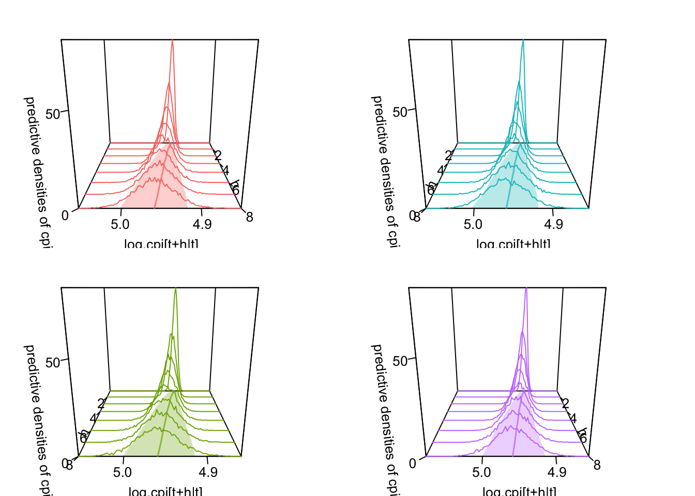

Inflation Insight: Forecasting Australian Inflation Rate Using Bayesian VAR model
Abstract. The purpose of this research is to explore the trend in Australia’s inflation rate over the next two years using the Bayesian Vector Auto-regression (BVAR) model. This study aims to provide a comprehensive analysis of inflation dynamics using advanced econometric techniques to forecast future trends. By applying the BVAR model, which incorporates both Bayesian statistical methods and vector auto-regression, evaluates various specifications of the BVAR model, including different priors and assumptions about the volatility of economic indicators.
Keywords. bsvars, quarto, R, Australia inflation rate
1 Introduction
1.1 Question Objective and Motivation
Question:
Will Australia’s inflation rate fall back to the 2-3% inflation target range in 2025?
Objective and Motivation:
Inflation has always been a topic of interest for economists, as trends in the inflation rate provide essential guidance for key decisions by economic participants, thus playing a crucial role in the economic and social development of a country (Bernoth and Ider 2021). The Reserve Bank of Australia (RBA) forecasts that by 2025, inflation will fall back to the target range of 2% to 3% and reach the midpoint of this range by 2026. Influenced by the COVID-19 pandemic, Blot et al. deduced that the inflation rate is affected by a variety of factors, such as GDP, exchange rates, interest rates, and unemployment rates (European Parliament. Directorate General for Internal Policies of the Union. 2022). Therefore, this study will assess the reasonableness of the RBA’s inflation rate forecast for the next two years. During the COVID-19 period, Australia’s inflation rate sharply rose to 7.8%, in response to which the RBA implemented a monetary tightening policy and began raising interest rates at the end of 2022, slowing the pace of rate hikes in the latter half of 2023. Hence, this report will further discuss whether the RBA has correctly assumed that its monetary policy measures have effectively curbed inflation.
2 Data and Data Properties
2.1 Data Selection and Rationale
Direct Inflationary Indicators:
1.\(cpi_t\): Consumer Price Index (CPI) from ABS.
CPI directly measure inflation by follow formula:
\[Inflation = (\frac{CPI_{Quarter \ of \ These \ Year}}{CPI_{Quarter \ of \ Previous \ Year} } - 1 )\times 100 \tag{1}\]
CPI is the basic data for measuring inflation. It is more stable and less affected by seasonal factors and short-term fluctuations than the annual inflation rate from which it is derived. In VAR, raw time series data rather than rates of change are used to capture and model the dynamic nature of the data.
2.\(infexp_t\): Business inflation expectations – 3-months ahead from RBA
Inflation expectations often guide consumer and business behavior; if inflation is expected to rise, they might make purchases and raise prices in advance, thus driving actual inflation up in the short term. Meanwhile, central banks closely monitor inflation expectations, adjusting monetary policies to influence these expectations and control actual inflation to maintain price stability.
Economic Activity and Policy Indicators:
- \(gdp_t\): Gross Domestic Product (GDP) from ABS.
GDP reflects the size and growth rate of a country’s economy. When GDP increases, it indicates increased economic activity, which can lead to demand-pull inflation because increased demand may exceed current production capacity, pushing up prices.
- \(crt_t\): Cash rate target published by RBA.
This is the main tool used by the RBA to influence economic activity. Raising the cash rate is usually aimed at reducing borrowing and spending, thereby reducing inflationary pressures.
- \(unemp_t\): Unemployment rate from ABS.
It indicate the level of slack in the labor market, influencing wage-push inflation.
- \(m_t\): Money aggregate (Broad money) from RBA.
‘Broad money’ is defined as ‘M3’ plus ‘Other borrowings from private sector by AFIs’. When the growth rate of broad money supply in an economy exceeds the growth rate of its real output, it leads to more money chasing the same amount of goods and services, causing price levels to rise, i.e., inflation. Therefore, central banks like the Reserve Bank of Australia (RBA) adjust interest rates and other tools to control the growth of broad money to achieve their inflation targets.
Market and External Trade Indicators:
- \(export_t\): International exports from ABS.
It affects trade balance and currency strength, influencing imported inflation.
- \(import_t\): International imports from ABS.
Directly affect inflation through the cost of imported goods.
- \(aord_t\): All Ordinaries Index (AORD) from yahoo finance.
It reflects investor confidence and economic activity which can be pre-emptive indicators of inflation.
- \(exr_t\): AUD/USD exchange rate from RBA.
It affects the price of imports and exports, contributing to inflation.
Following Figure 1 shows the correlation between CPI and other variables.
Despite the low direct correlation between inflation expectations and CPI, inflation expectations may more closely reflect concerns about core inflation, which excludes volatile items like food and energy, whereas the CPI includes all items. If the trends between core inflation and overall inflation differ, this discrepancy can reduce the correlation between inflation expectations and the CPI. However, inflation expectations provide additional insight into how future economic conditions are perceived by consumers, businesses, and investors. This forward-looking perspective is important as it might influence economic decisions that are not immediately apparent through current CPI data.
Exchange rate fluctuations are typically sensitive to immediate market sentiment and short-term capital flows, whereas the CPI, as a measure of past price level changes, often exhibits a lag in responding to market changes. Even if the correlation between the CPI and the AUD/USD exchange rate is low, including this variable can help researchers understand economic changes from a broader perspective. For example, changes in the exchange rate can indirectly affect domestic price levels through the cost of imports, especially in open economies.
It should be noted that the unemployment rate exhibits a weak correlation with the CPI. This could be attributed to the Phillips Curve, which illustrates a short-term inverse relationship between unemployment and inflation. Over the long term, however, this correlation may diminish due to various influencing factors. For instance, following COVID, the inflation rate in the United States has been continuously rising due to the bankruptcy crisis among small and medium-sized enterprises (SMEs), part of which is attributed to the inadequate supply of export goods produced by SMEs leading to a decline in export volumes, thereby driving up the domestic inflation rate in the US (Kalemli-Ozcan et al. 2020). This impact can be seen as an indirect effect of rising unemployment rates on inflation. Therefore, despite the weak correlation between unemployment rate and CPI, it is still important to include it in the model for a comprehensive analysis.
In summary, the dataset included data from 1990Q2 to 2024Q1, total 137 observation points with 10 variables.
2.2 Data Transformation
- Quarterly Transformation
All data have been quarterly converted by selecting the data on the last day of the quarter as the observation. One of the reasons for not using monthly data is that high-quality quarterly economic data are more readily available compared to monthly data. In this report, the key data, CPI, which published on ABS, and the monthly data starting point is Q3 of 2017. Since the research wanted to capture longer-term data, quarterly data was considered. Also, policymakers and economists often rely more on quarterly data for decision-making because it provides a more stable and comprehensive view of economic conditions to some extent. This stability is key to understanding and predicting economic trends, especially when considering the long-term impacts of policies.
- Log Transformation
Based on the line graph of the original data below (Figure 2), we can observe that exponentially growing variables need to be linearized, such as \(cpi_t\), \(gdp_t\), \(m_t\), \(export_t\), \(import_t\), \(aord_t\). Therefore, its logarithmically transformed form will be used in the following analysis.

Figure 2 Line plot of original data
- Integration transformation
According to ACF plot for all data (Figure 3), we can see all data with autocorrelation. It suggests that the series is not white noise and might not be stationary.

Considering the selection of the order of single-order integration, the unit root test (ADF test) is used and the p value is used to determine its significance. A small p-value means the null hypothesis is rejected (non-stationary).
According to Table 1, we can see that \(infexp_t\), \(lm_t\), require more than first order integration, while other require first-order integration(under 5% level of confidence).
| p value of ADF test of AR | p value of ADF test of diff-AR | conclusion | |
|---|---|---|---|
| lcpi | 0.9875 | 0.1048 | lcpi~I(n) |
| infexp | 0.0124 | 0.0100 | infexp~I(0) |
| lgdp | 0.0188 | 0.0100 | lgdp~I(1) |
| crt | 0.5879 | 0.0100 | crt~I(1) |
| unemp | 0.3192 | 0.0100 | unemp~I(1) |
| lm | 0.9045 | 0.2166 | lm~I(n) |
| lexport | 0.5086 | 0.0100 | lexport~I(1) |
| limport | 0.8118 | 0.0100 | limport~I(1) |
| laord | 0.5774 | 0.0100 | laord~I(1) |
| exr | 0.3046 | 0.0100 | exr~I(1) |
Consider that differencing might eliminate some of the long-term information (like trends) within the data, and considering the Minnesota prior method can be effective with nonstationary data, we have opted apply not differencing to any of the data sets.
After logarithmic transformation of part of the data, the line plot of the dataset is as shown below (Figure 4). The dataset still retains some trend characteristics. For example, almost all variables showed significant changes before and after COVID (the x-aisx is 120).

2.3 Importance of Key Variables Analysis
The model selects ten variables related to Australian inflation. Among the variables most directly related to inflation is inflation and inflation target. Meanwhile, because we use CPI as key variable, we first need to calculate quarterly inflation through CPI. Below we focus on analyzing these two variables:
The actual and expected inflation rates appear to move in tandem over much of the time period, suggesting that expectations may be influenced by current and past inflation rates, or vice versa. At the same time, we see that people’s expectations for inflation are relatively conservative. For example, during the COVID, the expected inflation was around 5%, but the actual inflation later surged to about 7.8%.
Regarding the specific inflation zone of 2-3%, it appears that both the expected and actual inflation rates oscillate into this range periodically. However, it seems that starting just before 2020, there’s a pronounced peak where expected inflation sharply rises above the actual inflation rate, which then converges back into the 2-3% range shortly after (although actual inflation rate still need some time). So we can foresee that inflation will indeed fall back to the 2-3% range in the near future.

3 Model and Hypothesis
Regarding model selection, the VAR model, capable of concurrently integrating the effects of multiple economic indicators on inflation such as GDP, exchange rates, interest rates, unemployment rates, and other variables, offers coherent and reliable results by analyzing the time series of these variables for data analysis and forecasting (Stock and Watson 2001).
Based on the above analysis, all 10 variables play an important role in the fitting of the model. Use VAR(p) model for modeling, where N=10, T=137.
\[ \begin{align} y_t &= \mu_0 + A_1y_{t-1} +...+A_py_{t-p} +\epsilon_t \\ \epsilon_t|Y_{t-1} &\sim iid \mathcal{N}_{10}(\textbf{0}_{10}, \Sigma) \end{align} \tag{2}\]
In matrix notation:
\[ \begin{align} Y &= X A +E \\ E|X &\sim \mathcal{MN}_{T\times 10}(\textbf{0},\Sigma,I_T) \end{align} \tag{3}\]
\(Y\) is \(T\times 10\)matrix of dependent variables.
\(X\) is \(T \times (1 + 10p)\) matrix of independent variables.
\(A\) is the matrix of coefficients, which includes the constant term \(\mu_0\) and the autoregressive coefficients.
\[ Y= \begin{bmatrix} y_{lcpi,1} & y_{infexp,1} & y_{lgdp,1} & y_{crt,1} & y_{unemp,1} & y_{lm,1} & y_{lexport,1} & y_{limport,1} & y_{laord,1} & y_{exr,1}\\ \ y_{lcpi,2} & y_{infexp,2} & y_{lgdp,2} & y_{crt,2} & y_{unemp,2} & y_{lm,2} & y_{lexport,2} & y_{limport,2} & y_{laord,2} & y_{exr,2} \\ \vdots & \vdots & \vdots& \vdots& \vdots& \vdots& \vdots& \vdots& \vdots & \vdots \\ y_{lcpi,T} & y_{infexp,T} & y_{lgdp,T} & y_{crt,T} & y_{unemp,T} & y_{lm,T} & y_{lexport,T} & y_{limport,T} & y_{laord,T} & y_{exr,T}\\ \end{bmatrix}_{T \times 10} \]
\[ X=\begin{bmatrix} 1 & y_{lcpi,t-1} & y_{infexp,t-1} & \ldots & y_{exr,t-1} & \ldots & y_{lcpi,t-p} & y_{infexp,t-p} & \ldots & y_{exr,t-p} \\ 1 & y_{lcpi,t-2} & y_{infexp,t-2} & \ldots & y_{exr,t-2} & \ldots & y_{lcpi,t-p-1} & y_{infexp,t-p-1} & \ldots & y_{exr,t-p-1} \\ \vdots & \vdots & \vdots & \ddots & \vdots & \ddots & \vdots & \vdots & \ddots & \vdots \\ 1 & y_{lcpi,1} & y_{infexp,1} & \ldots & y_{exr,1} & \ldots & y_{lcpi,1-p} & y_{infexp,1-p} & \ldots & y_{exr,1-p}\\ \end{bmatrix}_{T\times (1+10p)} \]
\[ A = \begin{bmatrix} \mu_{lcpi} & \mu_{infexp} & \ldots & \mu_{lexr} \\ A_{1,lcpi}^{(1)} & A_{1,infexp}^{(1)} & \ldots & A_{1,exr}^{(1)} \\ A_{2,lpci}^{(1)} & A_{2,infexp}^{(1)} & \ldots & A_{2,exr}^{(1)} \\ \vdots & \vdots & \ddots & \vdots \\ A_{10,lcpi}^{(1)} & A_{10, infexp}^{(1)} & \ldots & A_{10,exr}^{(1)} \\ \vdots & \vdots & \ddots & \vdots \\ A_{1,lcpi}^{(p)} & A_{1,infexp}^{(p)} & \ldots & A_{1,exr}^{(p)} \\ A_{2,lcpi}^{(p)} & A_{2,infexp}^{(p)} & \ldots & A_{2,exr}^{(p)} \\ \vdots & \vdots & \ddots & \vdots \\ A_{10,lcpi}^{(p)} & A_{10,infexp}^{(p)} & \ldots & A_{10,exr}^{(p)} \\ \end{bmatrix}_{(1 + 10p)\times 10} \]
\[ \begin{align*} E &= \begin{bmatrix} \epsilon_{1,lcpi} & \epsilon_{1,infexp} & \ldots & \epsilon_{1,exr} \\ \epsilon_{2,lcpi} & \epsilon_{2,infexp} & \ldots & \epsilon_{2,exr} \\ \vdots & \vdots & \ddots & \vdots \\ \epsilon_{T,lcpi} & \epsilon_{T,infexp} & \ldots & \epsilon_{T,exr} \end{bmatrix}_{T\times 10} \\ \end{align*} \]
3.1 Model Application and Objective Fulfillment
Based on the model above, we will employ VAR of order p to carry out forecasts for the next two years. Given that the data is quarterly, setting the forecast horizon (h) to 8 quarters for our iterative forecasting process.
In the forecasting process, we will concentrate on determining the conditional mean and confidence interval of the projected CPI, denoted as \(lcpi_{T+h|T}\). Subsequently, we’ll utilize the forecasted (log) CPI values to calculate the inflation rate and assess whether it aligns with the target inflation range of 2-3%.
4 Estimation Procedure and Algorithm
4.1 Basic Model
4.1.1 Prior Distribution and Posterior Distribution Specified
The basic model based on the natural-conjugate prior distribution, which is specified as a matrix normal inverse Wishart distribution (Woźniak 2016). Minnesota prior with some stylised facts about the macroeconomic time series, since \(lcpi_t\) and \(lm_t\) are unit root non-stationary and other all variables are stationary, is applied to form the specifications of the prior distribution.
The estimation procedures to draw from the posterior follows the steps below:
Step 1: Prior distribution is presented below. We will specify \(\underline{A}\), \(\underline{V}\), \(\underline{S}\) and \(\underline{v}\).
\[ \begin{align} p(A,\Sigma) &\propto L(A,\Sigma | Y,X) \ p(A|\Sigma) \ p(\Sigma) \\ p(A,\Sigma|Y,X) &= p(A|Y,X,\Sigma) \ p(\Sigma|Y,X) \\ \\ A|\Sigma &\sim \mathcal{MN}_{K\times N}(\underline{A}, \Sigma,\underline{V}) \\ \Sigma &\sim \mathcal{IW}_{N}(\underline{S}, \underline{\nu}) \end{align} \]
- \(\underline{A}\) is a \(K \times 10\) matrix, reflect the random walk with no drift process on the first lag of diagonal, and 0 elsewhere.
\[ \underline{A} = \left[ \underbrace{\textbf{0}_{10\times 1}}_{intercept} \quad \underbrace{ \begin{matrix} 1 & \cdots & 0 & \cdots & 0 \\ \vdots & \ddots & \vdots & \ddots& \vdots \\ 0 & \cdots & 1 & \cdots& 0 \\ \vdots & \ddots & \vdots & \ddots& \vdots \\ 0 & \cdots & 0 & \cdots & 1\\ \end{matrix}_{10\times10} \quad \begin{matrix} 0 & \cdots & 0\\ \vdots & \ddots & \vdots \\ 0 & \cdots & 0 \end{matrix} _{10\times10(p-1))}}_{N\times(K-1)} \right]' \]
- \(\underline{V}\) represents the shrinking level of the specified \(\underline{A}\). It’s a \(K\) vector diagonal matrix with the diagonal elements set to be the desired shrinking level.
\[ \underline{V} = diag\left[ \underbrace{\kappa_{2}}_{intercept} \quad \underbrace{\kappa_{1}(\textbf{p} ^{-2}\otimes I^{'}_{N})}_{A_{1} \ to \ A_{p}} \right] \]
\(\underline{S}\) is \(10\times10\) symmetric matrix where the diagonal represents the variances of individual variables (diagonal of \(\Sigma\)) and the off-diagonals are 0.
\(\underline{v}\) is \(N+2\), and it is a single values because variance is assumed to be the same for all elements of \(\Sigma\).
Step 2: Posterior distribution shows below with the implementation of the specification in Step 1
\[ \begin{align} p(A,\Sigma | Y,X) &= p(A|Y,X,\Sigma) \ p(\Sigma|Y,X) \\ p(A|Y,X,\Sigma) &\sim \mathcal{MN}_{K\times N}(\overline{A}, \Sigma,\overline{V} ) \\ p(\Sigma|Y,X) &\sim \mathcal{IW}_{N}(\overline{S}, \overline{\nu}) \end{align} \]
Therefore we can get:
\[ \begin{align} \overline{A} &= \overline{V}(X'Y+\underline{V}^{-1}\underline{A}) \\ \overline{V} &= (X'X + \underline{V}^{-1})^{-1} \\ \overline{S} &= \underline{S}+Y'Y+\underline{A'} \ \underline{V}^{-1}\underline{A}-\overline{A'}\overline{V}^{-1}\overline{A} \\ \overline{\nu} &= T + \underline{\nu} \end{align} \]
Step 3: As \(\overline{A}\), \(\overline{V}\), \(\overline{S}\) and \(\overline{v}\) are specified:
To obtain a sample of \(S\) draws from the posterior distribution:
Sample \(S\) draws from the marginal posterior distribution for \(\Sigma^{(s)}\) given by \(\mathcal{IW}_{10}(\overline{S}, \overline{v})\), and collect the draws in \(\{\Sigma^{(s)}\}_{s=1}^{S}\)
For each draw \(\Sigma^{(s)}\) for \(s=1,\dots,S\) sample the corresponding draw of \(A^{(s)}\) from \(\mathcal{MN}_{K\times 10}(\overline{A}, \Sigma^{(s)},\overline{V} )\)
Output is the sample draws from the joint posterior distribution \(\left\{ {A^{(s)}, \Sigma^{(s)}} \right\}^{S}_{s=1}\).
Function below is posterior.draws:
## Posterior sample draw function for basic model(posterior.draws)
posterior.draws = function (S, Y, X){
## Pre-setup
N = ncol(Y)
t = N + 1
p = frequency(Y)
A.hat = solve(t(X)%*%X)%*%t(X)%*%Y
Sigma.hat = t(Y-X%*%A.hat)%*%(Y-X%*%A.hat)/nrow(Y)
# Prior distribution (with Minnesota prior)
A.prior = matrix(0,nrow(A.hat),ncol(A.hat))
A.prior[2:t,] = diag(N)
V.prior = diag(c(kappa.2,kappa.1*((1:p)^(-2))%x%rep(1,N)))
S.prior = diag(diag(Sigma.hat))
nu.prior = N+2
# Define posterior
A.posterior = array(NA, dim = c((1+N*p),N,S))
Sigma.posterior = array(NA, dim = c(N,N,S))
# ------------------------posterior.draws----------------------------------
# Normal-inverse Wishard posterior parameters
V.bar.inv = t(X)%*%X + diag(1/diag(V.prior))
V.bar = solve(V.bar.inv)
A.bar = V.bar%*%(t(X)%*%Y + diag(1/diag(V.prior))%*%A.prior)
nu.bar = nrow(Y) + nu.prior
S.bar = S.prior + t(Y)%*%Y + t(A.prior)%*%diag(1/diag(V.prior))%*%A.prior - t(A.bar)%*%V.bar.inv%*%A.bar
S.bar.inv = solve(S.bar)
# Posterior draws
Sigma.posterior = rWishart(S, df=nu.bar, Sigma=S.bar.inv)
Sigma.posterior = apply(Sigma.posterior,3,solve)
Sigma.posterior = array(Sigma.posterior,c(N,N,S))
A.posterior = array(rnorm(prod(c(dim(A.bar),S))),c(dim(A.bar),S))
L = t(chol(V.bar))
for (s in 1:S){
A.posterior[,,s]= A.bar + L%*%A.posterior[,,s]%*%chol(Sigma.posterior[,,s])
}
output = list(A.posterior=A.posterior, Sigma.posterior=Sigma.posterior)
return(output)
}4.1.2 Function Proofing
Consider Bi-variate Gaussian random walk process:
\[ y_t = \begin{bmatrix} y_{t,1} \\ y_{t,2} \end{bmatrix} = \begin{bmatrix} y_{t-1,1} \\ y_{t-1,2} \end{bmatrix} + \begin{bmatrix} \epsilon_{t,1} \\ \epsilon_{t,2} \end{bmatrix} , where \ \ \epsilon_{t,1} \sim \mathcal{N}(0,1) \ and \ \epsilon_{t,2} \sim \mathcal{N}(0,1) \]
\[ Y = \begin{bmatrix} y_2' \\ y_3' \\ \vdots \\ y_n' \end{bmatrix}, \quad X = \begin{bmatrix} 1 \quad y_1' \\ 1 \quad y_2' \\ \vdots \quad \vdots \\ 1 \quad y_{n-1}' \end{bmatrix} \]
After estimating a model that includes a constant term and one lag using artificial data, we observe that the posterior mean of the autoregressive and covariance matrices closely approximates an identity matrix, and the posterior mean of the constant term is nearly a vector of zeros.
- The posterior mean of the \(A\) is:
| A | Simulation Parameter Y1 | Simulation Parameter Y2 |
|---|---|---|
| Constant term | 0.0308 | 0.0718 |
| Y1 lag | 0.9970 | -0.0016 |
| Y2 lag | -0.0019 | 0.9857 |
- The posterior mean of the \(\Sigma\) is:
| Sigma | Simulation Parameter Y1 | Simulation Parameter Y2 |
|---|---|---|
| Y1 lag | 0.9904 | -0.0208 |
| Y2 lag | -0.0208 | 0.9818 |
4.2 Extended Model
The model extension base on a hierarchical model. The gamma distribution on the Minnesota shrinkage parameter lambda \(\lambda\) is introduced to adjust \(V\).
4.2.1 Prior Distribution and Posterier Distribution Specified
Step 1: Prior distribution is presented below. We will specify \(\underline{A}\), \(\underline{V}\), \(\underline{S}\), \(\underline{\nu}\) by Minnesota shrinkage parameter lambda \(\lambda\).
\[ \begin{align} p(A,\Sigma, \lambda |Y,X) &\propto L(A,\Sigma | Y,X) \ p(A,\Sigma, \lambda) \\ &\propto L(A,\Sigma | Y,X) \ p(A |\Sigma, \lambda) \ p(\Sigma) \ p(\lambda) \end{align} \]
where, each \(p(A |\Sigma, k)\), \(p(\Sigma)\), \(p(k)\) is specified below:
\[ \begin{align} A |\Sigma, \lambda &\sim \mathcal{MN}_{K\times N}(\underline{A}, \Sigma, \lambda\underline{V}) \\ \Sigma &\sim \mathcal{IW}_{N}(\underline{S},\underline{\nu}) \\ \lambda &\sim \mathcal{Gamma}(\underline{k_{\lambda}}, \underline{\theta_{\lambda}} ) \\ \end{align} \]
The prior distribution is shown in the same way as the Step 1 of basic model.
Step 2: Posterior distribution shows below with the implementation of the specification in Step 1 by multiply \(L(A,\Sigma | Y,X) \ p(A |\Sigma, \lambda) \ p(\Sigma) \ p(\lambda)\)
The probability density function of Gamma distribution is:
\[ f(x;k,\theta) = \frac{x^{k-1}e^{-\frac{x}{\theta}}}{\theta^k \ \Gamma(k)} \quad \quad for \ x>0, and \ k,\theta >0 \]
The kernel of Gamma distribution is:
\[ p(x|k,\theta) \propto x^{k-1}e^{-\frac{x}{\theta}} \]
Therefore all kernel shows as follow:
\[ \begin{align} L(A,\Sigma | Y,X) &= \mathrm{det} (\Sigma)^{-\frac{T}{2}}\times \mathrm{exp} \left\{ -\frac{1}{2} \mathrm{tr}\left[ \Sigma^{-1}(A-\widehat{A})'X'X (A-\widehat{A})\right]\right\} \times \mathrm{exp}\left\{ -\frac{1}{2} \mathrm{tr}\left[ \Sigma^{-1}(Y-X\widehat{A})'(Y-X\widehat{A})\right]\right\} \\ p(A |\Sigma, \lambda) &= \mathrm{det} (\Sigma)^{-\frac{K}{2}} \mathrm{det} (\lambda \underline{V} )^{-\frac{N}{2}} \mathrm{exp} \left\{ -\frac{1}{2} \mathrm{tr}\left[ \Sigma^{-1} (A-\underline{A})' (\lambda\underline{V})^{-1} (A-\underline{A})\right]\right\} \\ p(\Sigma) &= \mathrm{det} (\Sigma)^{\frac{\underline{\nu}+N+1}{2}} \mathrm{exp}\left\{ -\frac{1}{2} \mathrm{tr}\left[ \Sigma^{-1} \underline{S}\right]\right\} \\ p(\lambda) &= \lambda ^{\underline{k_{\lambda}}-1}e^{-\frac{\lambda}{\underline{\theta_{\lambda}}}} \end{align} \]
- The kernel of the fully conditional posterior distribution of \(A\) and \(\Sigma\):
\[ \begin{align} p(A,\Sigma |Y,X, \lambda) &\propto L(Y,X|A,\Sigma)p(A |\Sigma, \lambda)p(\Sigma) \\ &\propto \det(\Sigma)^{-\frac{T+N+K+\underline{\nu}+1}{2}} \\ &\times \exp\left\{ -\frac{1}{2} \mathrm{tr}[\Sigma^{-1}[(A-\overline{A})'\overline{V}^{-1}(A-\overline{A})+\underline{S}+Y'Y+\underline{A}'(\lambda\underline{V})^{-1}\underline{A}-\overline{A}'\overline{V}^{-1}\overline{A}] ] \right\} \\ \end{align} \]
Now, we can get:
\[ \begin{align} \overline{A} &= \overline{V}(X'Y+(\lambda\underline{V})^{-1}\underline{A}) \\ \overline{V} &= (X'X + (\lambda\underline{V})^{-1})^{-1}\\ \overline{S} &= \underline{S}+Y'Y+\underline{A}'(\lambda\underline{V})^{-1}\underline{A}-\overline{A}'\overline{V}^{-1}\overline{A} \\ \overline{\nu} &= T+\underline{\nu} \end{align} \]
- The kernel of the fully conditional posterior distribution of \(\lambda\):
\[ \begin{align} p(\lambda |Y,X,A,\Sigma ) &\propto L(Y,X|A,\Sigma)p(A,\Sigma, \lambda)\\ &\propto L(Y,X|A,\Sigma)p(A |\Sigma, \lambda)p(\Sigma)p(\lambda) \\ &\propto p(A |\Sigma, \lambda)p(\lambda) \end{align} \]
\[ \begin{align} p(\lambda |Y,X,A,\Sigma ) &\propto p(A |\Sigma, \lambda)p(\lambda) \\ &\propto det(\lambda \underline{V} )^{-\frac{N}{2}}exp\left\{ -\frac{1}{2} \mathrm{tr}\left[ \Sigma^{-1} (A-\underline{A})' (\lambda\underline{V})^{-1} (A-\underline{A})\right]\right\} \times \lambda ^{\underline{k_{\lambda}}-1}e^{-\frac{\lambda}{\underline{\theta_{\lambda}}}} \\ &\propto det(\underline{V} )^{-\frac{N}{2}} \lambda^{-\frac{KN}{2}} exp\left\{ -\frac{1}{2} \mathrm{tr}\left[ \Sigma^{-1} (A-\underline{A})' (\lambda\underline{V})^{-1} (A-\underline{A})\right]\right\} \times \lambda ^{\underline{k_{\lambda}}-1}exp \left\{ -\frac{\lambda}{\underline{\theta_{\lambda}}} \right\} \\ &\propto \lambda^{-\frac{KN}{2} + \underline{k_{\lambda}}-1 } exp\left\{ -\frac{1}{2} \mathrm{tr}\left[ \Sigma^{-1} (A-\underline{A})' (\lambda\underline{V})^{-1} (A-\underline{A})\right]-\frac{\lambda}{\underline{\theta_{\lambda}}} \right\} \\ &\propto \lambda^{-\frac{KN}{2} + \underline{k_{\lambda}}-1 } exp\left\{ -\frac{\mathrm{tr}\left[ \Sigma^{-1} (A-\underline{A})' (\underline{V})^{-1} (A-\underline{A})\right]}{2\lambda} -\frac{\lambda}{\underline{\theta_{\lambda}}} \right\}\\ &\propto \lambda^{-\frac{KN}{2} + \underline{k_{\lambda}}-1 } exp\left\{ \frac{- \left[ \frac{1}{\lambda} \mathrm{tr} \left[ \Sigma^{-1} (A-\underline{A})' (\underline{V})^{-1} (A-\underline{A})\right] + \frac{\lambda}{ \frac{1}{2} \underline{\theta_{\lambda}}}\right]}{2} \right\}\\ \end{align} \]
As we can figure out the kernel follows generalized inverse Gaussian distribution (GIG):
\[ f(x;a,b,p)=\frac{(a/b)^{p/2}}{2K_p(\sqrt{ab})}x^{(p-1)}e^{-(ax+b/x)/2}, \quad \quad x>0 \]
The kernel of GIG:
\[ p(x|a,b,p) \propto x^{p-1} \mathrm{exp} \left\{\frac{-(ax+\frac{b}{x})}{2} \right\} \]
Hence, the full-conditional posterior distribution of \(\lambda\) follows a Generalised Inverse Gaussian distribution.
\[ \lambda|Y,X,A,\Sigma \sim \mathcal{GIG}(\overline{a},\overline{b},\overline{p}) \]
Therefore we can get:
\[ \begin{align} \overline{a} &= \frac{2}{\underline{\theta_{\lambda}} } \\ \overline{b} &= \mathrm{tr} \left[ \Sigma^{-1} (A-\underline{A})' (\underline{V})^{-1} (A-\underline{A})\right] \\ \overline{p} &= -\frac{KN}{2} + \underline{k_{\lambda}} \end{align} \]
Step 3: As \(\overline{A}\), \(\overline{V}\), \(\overline{S}\), \(\overline{v}\), \(\overline{a}\), \(\overline{b}\), \(\overline{p}\) are specified:
Initialize \(\lambda\) at \(\lambda^{(0)}\).
At each iteration \(s\):
Draw random matrices for \(A^{(s)}\) and \(\Sigma^{(s)}\) from \(p(A,\Sigma|Y,X,\lambda^{(s-1)})\).
Draw a random number for \(\lambda^{(s)}\) from \(p(\lambda |Y,X,A^{(s)},\Sigma^{(s)})\).
Repeat 1 and 2 \(S_{1} + S_{2}\) times.
Discard the first \(S_{1}\) draws that allows the algorithm to converge to the stationary posterior distribution.
Output is the sample draws from the joint posterior distribution \(\left\{ {A^{(s)}, \Sigma^{(s)}, \lambda^{(s)}} \right\}^{S_{1}+S_{2}}_{s=S_{1}+1}\).
Function below is posterior.draws.exten:
## Posterior sample draw function for extended model(posterior.draws.exten)
posterior.draws.exten = function (total_S, Y, X){
## Pre-setup
N = ncol(Y)
t = N + 1
p = frequency(Y)
A.hat = solve(t(X)%*%X)%*%t(X)%*%Y
Sigma.hat = t(Y-X%*%A.hat)%*%(Y-X%*%A.hat)/nrow(Y)
K = ncol(X)
# Prior distribution (with Minnesota prior)
A.prior = matrix(0,nrow(A.hat),ncol(A.hat))
A.prior[2:t,] = diag(N)
V.prior = diag(c(kappa.2,kappa.1*((1:p)^(-2))%x%rep(1,N)))
S.prior = diag(diag(Sigma.hat))
nu.prior = N+2
# Define posterior
A.posterior = array(NA, dim = c((1+N*p),N,S1+S2))
Sigma.posterior = array(NA, dim = c(N,N,S1+S2))
lambda.posterior = matrix(NA, S1+S2, 1)
# initial value of lambda
lambda.posterior[1] = 10 # set lambda0
# ----------------------posterior.draws.exten------------------------------
for (s in 1:total_S){
# NIW posterior parameters
V.bar.inv = t(X)%*%X + diag(1/diag(lambda.posterior[s]* V.prior))
V.bar = solve(V.bar.inv)
A.bar = V.bar%*%(t(X)%*%Y + diag(1/diag(lambda.posterior[s]* V.prior))%*%A.prior)
nu.bar = nrow(Y) + nu.prior
S.bar = S.prior + t(Y)%*%Y + t(A.prior)%*%diag(1/diag(lambda.posterior[s]* V.prior))%*%A.prior - t(A.bar)%*%V.bar.inv%*%A.bar
S.bar.inv = solve(S.bar)
# posterior draws for A and Sigma
Sigma.posterior.IW = rWishart(1, df=nu.bar, Sigma=S.bar.inv)
Sigma.posterior.draw = apply(Sigma.posterior.IW,3,solve)
Sigma.posterior[,,s] = Sigma.posterior.draw
A.posterior[,,s] = array(rnorm(prod(c(dim(A.bar),1))),c(dim(A.bar),1))
L = t(chol(V.bar))
A.posterior[,,s] = A.bar + L%*%A.posterior[,,s]%*%chol(Sigma.posterior[,,s])
# Update parameters for lambda posterior
p = lambda.priors$k - (K * N)/2 # N=10
diff_A = A.posterior[,,s] - A.prior
product = t(diff_A) %*% solve(V.prior) %*% diff_A
b = sum(diag(solve(Sigma.posterior[,,s] %*% product)))
a = 2 / lambda.priors$theta
# Draw next period value for lambda from GIG distribution
if (s!=total_S){
lambda.posterior[s+1] = GIGrvg::rgig(n=1, lambda = p, chi = b, psi = a)
}
}
output = list(A.posterior.exten = A.posterior[,,(S1+1):S2],
Sigma.posterior.exten = Sigma.posterior[,,(S1+1):S2],
lambda.posterior.exten = lambda.posterior[(S1+1):S2,])
return(output)
}4.2.2 Function Proofing
After fitting a model that includes a constant term and one lag with artificial data, just like the basic model, the extend model also shows that the posterior mean of both the autoregressive and covariance matrices closely identity matrix, and the posterior mean of the constant term is almost a vector of zeros.
- The posterior mean of the \(A\) is:
| A | Simulation Parameter Y1 | Simulation Parameter Y2 |
|---|---|---|
| Constant term | 0.0304 | 0.0705 |
| Y1 lag | 0.9969 | -0.0016 |
| Y2 lag | -0.0019 | 0.9858 |
- The posterior mean of the \(\Sigma\) is:
| Sigma | Simulation Parameter Y1 | Simulation Parameter Y2 |
|---|---|---|
| Y1 lag | 0.9903 | -0.0209 |
| Y2 lag | -0.0209 | 0.9828 |
5 Empirical Analysis - Model Applying and Forecasing
5.1 Basic Model
| 0.022487 | 0.239344 | 0.015375 | 3.772253 | 0.762991 | -0.026571 | 0.041992 | 0.209237 | 0.354570 | 0.153967 |
| 0.997695 | -0.113153 | -0.002101 | 0.041971 | 0.081012 | -0.001401 | 0.010894 | 0.018803 | 0.020152 | 0.001117 |
| 0.004636 | 0.488874 | -0.000002 | 0.172252 | -0.044286 | 0.001115 | 0.011634 | 0.018032 | -0.012363 | -0.017317 |
| 0.000967 | -0.084569 | 0.998710 | 0.246898 | 0.013631 | -0.002384 | -0.001717 | 0.003282 | 0.037560 | 0.009190 |
| 0.001482 | 0.172613 | -0.000503 | 1.039676 | -0.180908 | -0.000909 | 0.022218 | 0.003863 | 0.004724 | 0.002909 |
| 0.001882 | -0.167358 | 0.005032 | -0.143112 | 0.889873 | 0.001887 | -0.002966 | -0.013108 | -0.006123 | -0.009323 |
| -0.000705 | 0.013135 | -0.004998 | -0.149762 | 0.141990 | 0.989428 | 0.014266 | 0.072869 | 0.019394 | -0.008221 |
| 0.001703 | -0.098460 | 0.002827 | -0.094150 | -0.083816 | -0.000519 | 0.909877 | -0.039209 | -0.027771 | -0.001008 |
| -0.003402 | 0.045982 | -0.006957 | -0.429023 | 0.138237 | -0.003229 | -0.005963 | 0.878758 | -0.004867 | 0.001058 |
| 0.003383 | 0.669583 | 0.013316 | 0.181981 | -0.579936 | 0.012783 | 0.058214 | 0.083007 | 0.928924 | -0.021260 |
| 0.001894 | 0.309709 | 0.006359 | 0.415477 | -0.135637 | 0.008211 | 0.023505 | 0.059918 | -0.028299 | 0.979138 |
| 0.000021 | 0.000459 | 0.000014 | 0.000182 | -0.000390 | -0.000004 | 0.000002 | 0.000049 | -0.000005 | 0.000011 |
| 0.000459 | 0.220484 | 0.000617 | 0.034636 | -0.031898 | -0.000638 | 0.005437 | 0.010908 | -0.001779 | -0.000168 |
| 0.000014 | 0.000617 | 0.000089 | 0.000184 | -0.001472 | -0.000006 | 0.000083 | 0.000149 | -0.000017 | 0.000017 |
| 0.000182 | 0.034636 | 0.000184 | 0.138102 | -0.001529 | -0.000361 | -0.000289 | -0.002042 | 0.004264 | 0.004481 |
| -0.000390 | -0.031898 | -0.001472 | -0.001529 | 0.073025 | 0.000112 | -0.001582 | -0.000612 | 0.000788 | -0.000951 |
| -0.000004 | -0.000638 | -0.000006 | -0.000361 | 0.000112 | 0.000128 | 0.000012 | -0.000036 | 0.000016 | 0.000005 |
| 0.000002 | 0.005437 | 0.000083 | -0.000289 | -0.001582 | 0.000012 | 0.001990 | 0.001128 | 0.000072 | -0.000336 |
| 0.000049 | 0.010908 | 0.000149 | -0.002042 | -0.000612 | -0.000036 | 0.001128 | 0.004843 | -0.000636 | -0.001085 |
| -0.000005 | -0.001779 | -0.000017 | 0.004264 | 0.000788 | 0.000016 | 0.000072 | -0.000636 | 0.004417 | 0.001134 |
| 0.000011 | -0.000168 | 0.000017 | 0.004481 | -0.000951 | 0.000005 | -0.000336 | -0.001085 | 0.001134 | 0.001518 |

Figure 7 presents a 3D visualization of the density intervals for the log CPI and inflation expectations. Inflation expectations show some fluctuations, while the log CPI exhibits a stable increase. as indicated by the narrow bounded confidence intervals (light blue for CPI and light green for inflation expectations). The varying heights of the intervals reflect the level of prediction certainty; as we project further into the future, the intervals become wider and more dispersed due to increased uncertainty.

After an in-depth examination of key variables and converting the log CPI to CPI to calculate the inflation rate for the next eight periods (Figure 8), we found contrary results. Both the inflation rate and inflation expectations show a downward trend. Although they will remain within the RBA’s target range for a while, they are expected to fall below 2% after 2025. As for people’s inflation expectations, the forecast indicates a fluctuating decline.

5.2 Extended Model
| 0.188638 | 35.636598 | 1.195273 | 44.207740 | 22.216190 | 0.595854 | 2.075501 | 15.213020 | 0.602600 | 1.928389 |
| 0.900940 | 3.146955 | -0.036595 | 2.877600 | 3.493241 | -0.006319 | 0.341870 | 0.725178 | 0.036034 | 0.078436 |
| 0.004860 | 0.319458 | -0.000436 | 0.148774 | -0.041142 | 0.003409 | 0.022329 | 0.013966 | 0.004776 | -0.014972 |
| -0.019861 | -2.486073 | 0.845654 | -4.548681 | -4.229855 | -0.013692 | -0.008236 | -0.795376 | 0.581042 | -0.150850 |
| 0.001933 | 0.060133 | -0.003035 | 0.919842 | -0.176445 | -0.002643 | 0.012271 | -0.032752 | 0.019441 | 0.011998 |
| 0.002557 | -0.214560 | 0.002556 | -0.294931 | 0.732430 | 0.004052 | -0.020502 | -0.035284 | -0.027651 | -0.024297 |
| 0.022130 | -0.515608 | -0.006018 | 0.961101 | 0.222468 | 0.949607 | -0.172691 | -0.297743 | 0.880789 | 0.457458 |
| 0.035743 | 2.764934 | 0.055280 | 0.652448 | -1.266774 | -0.030087 | 0.427812 | 0.088200 | -0.407933 | -0.023934 |
| -0.007550 | -0.448692 | -0.023527 | -0.543887 | 0.137763 | -0.008414 | -0.057218 | 0.521559 | 0.071008 | 0.049988 |
| 0.010449 | 1.917557 | 0.034389 | 0.136375 | -2.036329 | -0.005872 | 0.097489 | 0.136197 | 0.883124 | -0.059768 |
| 0.024233 | 1.018000 | 0.033507 | 2.871187 | -0.668580 | 0.036330 | -0.035254 | 0.173904 | -0.269526 | 0.963305 |
| 0.000014 | 0.000367 | 0.000008 | 0.000030 | -0.000228 | -0.000002 | 0.000023 | 0.000026 | 0.000005 | 0.000010 |
| 0.000367 | 0.144469 | 0.000242 | 0.018481 | -0.019191 | -0.000265 | 0.004833 | 0.006759 | 0.000755 | 0.000708 |
| 0.000008 | 0.000242 | 0.000068 | -0.000001 | -0.001145 | -0.000008 | 0.000090 | 0.000081 | 0.000013 | 0.000014 |
| 0.000030 | 0.018481 | -0.000001 | 0.110137 | 0.001269 | -0.000326 | -0.000953 | -0.004963 | 0.004482 | 0.004446 |
| -0.000228 | -0.019191 | -0.001145 | 0.001269 | 0.049088 | 0.000061 | -0.001900 | -0.000554 | -0.000150 | -0.001166 |
| -0.000002 | -0.000265 | -0.000008 | -0.000326 | 0.000061 | 0.000092 | -0.000021 | -0.000026 | 0.000043 | -0.000002 |
| 0.000023 | 0.004833 | 0.000090 | -0.000953 | -0.001900 | -0.000021 | 0.001380 | 0.000812 | -0.000040 | -0.000303 |
| 0.000026 | 0.006759 | 0.000081 | -0.004963 | -0.000554 | -0.000026 | 0.000812 | 0.003398 | -0.000276 | -0.000899 |
| 0.000005 | 0.000755 | 0.000013 | 0.004482 | -0.000150 | 0.000043 | -0.000040 | -0.000276 | 0.003541 | 0.000883 |
| 0.000010 | 0.000708 | 0.000014 | 0.004446 | -0.001166 | -0.000002 | -0.000303 | -0.000899 | 0.000883 | 0.001342 |

Figure 10 presents a 3D visualization of the density intervals for the log CPI and inflation expectations calculated by the extension model. The results are generally similar to those of the basic model, with the only difference being that the log CPI shows a downward trend instead of an upward one.

For the analysis of key data, we can see that the extension model presents a more aggressive outlook compared to the basic model (Figure 11). The expected inflation rate continues to decline over the next eight quarters, reaching negative values by the end of 2024 (deflation). People’s inflation expectations are also volatile, fluctuating within the 0%-2% range.

5.3 Asides - Different Priors and Assumptions
Until here, we realized that the extended model is more radical, and we decided to rethink the prior settings in the extended model and compare: In the extended model, consider the coefficient \(\lambda\)(follow gamma distribution.)
For the Gamma distribution with parameters \((k,θ)=(1,0.1)\) (red line), the density is highly concentrated near zero, making it very steep. This distribution is ideal for modeling high-frequency, short-duration events such as waiting times or time between failures. Compared to distributions with larger shape or scale parameters, this one lacks support for larger values, indicating most events occur within a very short time frame.

The predictive density distribution remains stable despite changes in the prior distribution of the Gamma distribution in lambda, indicating that the predictive values have stabilized in the Gibbs sampler. This suggests that our forecast is robust, and resulting in a stable posterior distribution and predictive outcome. Consequently, the predictive results are primarily driven by the data rather than the prior assumptions.
6 Stochastic Volatility Conditional Heteroskedasticity
Until now, we acknowledge that our model has not achieved the most optimal results. Our modeling approach has operated under the assumption of homoscedasticity. However, in real-world, such as the 2008 financial crisis and the 2020 COVID-19 pandemic, have demonstrated the significant and often abrupt fluctuations in the economy and financial markets. These events underscore the necessity of incorporating heteroscedasticity into our model to more accurately reflect the variable nature of economic conditions and market volatility.
6.1 Basic Model with Heteroskedasticity
The model specification is as below:
\[ \begin{align} Y &= X A +E \\ E|X &\sim \mathcal{MN}_{T\times 10}(\textbf{0},\Sigma,\mathrm{diag}(\sigma_{T}^{2})) \end{align} \tag{4}\]
Step 1: Prior distribution is presented below. We will specify \(\underline{A}\), \(\underline{V}\), \(\underline{S}\) and \(\underline{v}\).
\[ \begin{align} p(A,\Sigma) &\propto L(A,\Sigma | Y,X) \ p(A,\Sigma) \\ p(A,\Sigma) &\propto L(A,\Sigma | Y,X) \ p(A|\Sigma) \ p(\Sigma) \\ \\ A|\Sigma &\sim \mathcal{MN}_{K\times N}(\underline{A}, \Sigma,\underline{V}) \\ \Sigma &\sim \mathcal{IW}_{N}(\underline{S}, \underline{\nu}) \end{align} \]
- Likelihood function
\[ \begin{align} L\left( {A},{\Sigma}|Y,X \right) &\propto \text{det}({\Sigma})^{-\frac{T}{2}}\exp\left\{ -\frac{1}{2}\text{tr}\left[ {\Sigma}^{-1}(Y-X{A})'(Y-X{A}) \right] \right\}\\ &=\text{det}({\Sigma})^{-\frac{T}{2}}\\ &\quad\times\exp\left\{ -\frac{1}{2}\text{tr}\left[ {\Sigma}^{-1}({A}-\widehat{A})'X' \ \mathrm{diag}(\sigma_{T}^{2}) \ X({A}-\widehat{A}) \right] \right\}\\ &\quad\times \exp\left\{ -\frac{1}{2}\text{tr}\left[ {\Sigma}^{-1}(Y-X\widehat{A})' \ \mathrm{diag}(\sigma_{T}^{2}) \ (Y-X\widehat{A}) \right] \right\} \end{align} \]
- Natural-conjugate prior distribution (kernel)
\[ \begin{align} p\left({A},{\Sigma} \right) &\propto \text{det}({\Sigma})^{-\frac{N+K+\underline{\nu}+1}{2}}\\&\quad\times\exp\left\{ -\frac{1}{2}\text{tr}\left[ {\Sigma}^{-1}({A}-\underline{A})'\underline{V}^{-1}({A}-\underline{A}) \right] \right\}\\&\quad\times \exp\left\{ -\frac{1}{2}\text{tr}\left[ {\Sigma}^{-1}\underline{S} \right] \right\} \end{align} \]
Step 2: Posterior distribution shows below with the implementation of the specification in Step 1
\[ \begin{align} p\left( A, \Sigma|Y,X \right) &\propto L({A},{\Sigma}|Y,X)p\left( {A}, {\Sigma} \right)\\ &= L({A},{\Sigma}|Y,X)p\left( {A}| {\Sigma} \right)p\left( {\Sigma} \right) \end{align} \]
- kernel:
\[ \begin{align*} p\left( {A},{\Sigma} |Y,X\right) &\propto \text{det}({\Sigma})^{-\frac{T}{2}}\\ &\quad\times\exp\left\{ -\frac{1}{2}\text{tr}\left[ {\Sigma}^{-1}({A}-\widehat{A})'X' \ \mathrm{diag}(\sigma_{T}^{2}) \ X({A}-\widehat{A}) \right] \right\}\\ &\quad\times \exp\left\{ -\frac{1}{2}\text{tr}\left[ {\Sigma}^{-1}(Y-X\widehat{A})' \ \mathrm{diag}(\sigma_{T}^{2}) \ (Y-X\widehat{A}) \right] \right\}\\ & \quad\times\text{det}({\Sigma})^{-\frac{N+K+\underline{\nu}+1}{2}}\\ &\quad\times\exp\left\{ -\frac{1}{2}\text{tr}\left[ {\Sigma}^{-1}({A}-\underline{A})'\underline{V}^{-1}({A}-\underline{A}) \right] \right\}\\ &\quad\times \exp\left\{ -\frac{1}{2}\text{tr}\left[ {\Sigma}^{-1}\underline{S} \right] \right\} \\ &\propto\text{det}({\Sigma})^{-\frac{\overbrace{T+\underline{\nu}}^{\overline{\nu}} +N+K+1}{2}} \\ &\quad\times\exp\left\{ -\frac{1}{2}\text{tr}\left[ {\Sigma}^{-1} \color{blue}{\left[({A}-\widehat{A})'X' \ \mathrm{diag}(\sigma_{T}^{2}) \ X({A}-\widehat{A}) + ({A}-\underline{A})'\underline{V}^{-1}({A}-\underline{A}) +(Y-X\widehat{A})' \ \mathrm{diag}(\sigma_{T}^{2}) \ (Y-X\widehat{A}) + \underline{S} \right]} \right] \right\} \end{align*} \]
Focus on the blue part:
\[ \begin{align} & \quad \quad({A}-\widehat{A})'X' \ \mathrm{diag}(\sigma_{T}^{2}) \ X({A}-\widehat{A}) + ({A}-\underline{A})'\underline{V}^{-1}({A}-\underline{A}) +(Y-X\widehat{A})' \ \mathrm{diag}(\sigma_{T}^{2}) \ (Y-X\widehat{A}) + \underline{S} \\ &= A'X'\mathrm{diag}(\sigma_{T}^{2})XA - A'X'\mathrm{diag}(\sigma_{T}^{2})X\widehat{A} -\widehat{A}'X'\mathrm{diag}(\sigma_{T}^{2})XA + \underbrace{\widehat{A}'X'\mathrm{diag}(\sigma_{T}^{2})X\widehat{A}}_{\text{cancel out 1}} + A'\underline{V}^{-1}A -A'\underline{V}^{-1}\underline{A} - \underline{A}'\underline{V}^{-1}A +\underline{A}'\underline{V}^{-1}\underline{A}' \\ & \qquad + Y'\mathrm{diag}(\sigma_{T}^{2})Y - \underbrace{Y'\mathrm{diag}(\sigma_{T}^{2})X\widehat{A}}_{\text{cancel out 2}} - \underbrace{\widehat{A}'X'\mathrm{diag}(\sigma_{T}^{2})Y}_{\text{cancel out 2} } + \underbrace{\widehat{A}'X'\mathrm{diag}(\sigma_{T}^{2})X\widehat{A} }_{\text{cancel out 1}} +\underline{S} \\ &= \underbrace{A'X'\mathrm{diag}(\sigma_{T}^{2})XA}_{\text{merge 1}} - A'X'\mathrm{diag}(\sigma_{T}^{2})X\widehat{A} -\widehat{A}'X'\mathrm{diag}(\sigma_{T}^{2})XA + \underbrace{ A'\underline{V}^{-1}A}_{\text{merge 1}} - A'\underline{V}^{-1}\underline{A} - \underline{A}'\underline{V}^{-1}A +\underline{A}'\underline{V}^{-1}\underline{A}' + Y'\mathrm{diag}(\sigma_{T}^{2})Y +\underline{S} \\ & = A' \underbrace{[X'\mathrm{diag}(\sigma_{T}^{2}) X + \underline{V}^{-1}]}_{\overline{V}^{-1}} A - \underbrace{A'X'\mathrm{diag}(\sigma_{T}^{2})X\widehat{A} }_{A'X'\mathrm{diag}(\sigma_{T}^{2})Y} - \underbrace{\widehat{A}'X'\mathrm{diag}(\sigma_{T}^{2})XA}_{A'X'\mathrm{diag}(\sigma_{T}^{2})Y} - A'\underline{V}^{-1}\underline{A} - \underline{A}'\underline{V}^{-1}A +\underline{A}'\underline{V}^{-1}\underline{A}' + Y'\mathrm{diag}(\sigma_{T}^{2})Y +\underline{S} \\ & = A'\overline{V}^{-1}A - 2A' [ X'\mathrm{diag}(\sigma_{T}^{2})Y + \underline{V}^{-1}\underline{A} ] + \underline{A}'\underline{V}^{-1}\underline{A}' + Y'\mathrm{diag}(\sigma_{T}^{2})Y +\underline{S} \\ & = A'\overline{V}^{-1}A - 2A' \overline{V}^{-1} \underbrace{\overline{V}[X'\mathrm{diag}(\sigma_{T}^{2})Y + \underline{V}^{-1}\underline{A} ]}_{\overline{A}} + \underline{A}'\underline{V}^{-1}\underline{A}' + Y'\mathrm{diag}(\sigma_{T}^{2})Y +\underline{S} \\ & = A'\overline{V}^{-1}A - 2A'\overline{V}^{-1}\overline{A} + \underline{A}'\underline{V}^{-1}\underline{A}' + Y'\mathrm{diag}(\sigma_{T}^{2})Y +\underline{S} \\ & = A'\overline{V}^{-1}A - 2A'\overline{V}^{-1}\overline{A} + [ \overline{A}'\overline{V}^{-1}\overline{A} - \overline{A}'\overline{V}^{-1}\overline{A} ]+ \underline{A}'\underline{V}^{-1}\underline{A}' + Y'\mathrm{diag}(\sigma_{T}^{2})Y +\underline{S} \\ & = \underbrace{ A'\overline{V}^{-1}A - 2A'\overline{V}^{-1}\overline{A} + \overline{A}'\overline{V}^{-1}\overline{A}}_{\text{MN part}} \quad \underbrace{- \overline{A}'\overline{V}^{-1}\overline{A} + \underline{A}'\underline{V}^{-1}\underline{A}' + Y'\mathrm{diag}(\sigma_{T}^{2})Y +\underline{S}}_{\text{IW part}\quad \overline{S}} \\ \\ \\ & \qquad \text{where} \ A'X'\mathrm{diag}(\sigma_{T}^{2})X\widehat{A} = A'X'\mathrm{diag}(\sigma_{T}^{2})X(X'X)^{-1}X'Y=A'X'\mathrm{diag}(\sigma_{T}^{2})Y \end{align} \]
\[ \begin{align} \overline{V} &= (X'\mathrm{diag}(\sigma_{T}^{2})^{-1}X + \underline{V}^{-1})^{-1}\\ \overline{A} &= \overline{V}[X'\mathrm{diag}(\sigma_{T}^{2})^{-1}Y+\underline{V}^{-1}\underline{A}] \\ \overline{\nu} &= T+\underline{\nu}\\ \overline{S} &= \underline{S}+Y'\mathrm{diag}(\sigma_{T}^{2})^{-1}Y+\underline{A}'\underline{V}^{-1}\underline{A}-\overline{A}'\overline{V}^{-1}\overline{A} \end{align} \]
Step 3:
According to Bayesian Autoregressions website (WOZNIAK 2023), as \(\overline{A}\), \(\overline{V}\), \(\overline{S}\) and \(\overline{v}\) are specified:
To obtain a sample of \(S\) draws from the posterior distribution:
Sample \(S\) draws from the marginal posterior distribution for \(\Sigma^{(s)}\) given by \(\mathcal{IW}_{10}(\overline{S}, \overline{v})\), and collect the draws in \(\{\Sigma^{(s)}\}_{s=1}^{S}\)
For each draw \(\Sigma^{(s)}\) for \(s=1,\dots,S\) sample the corresponding draw of \(A^{(s)}\) from \(\mathcal{MN}_{K\times 10}(\overline{A}, \Sigma^{(s)},\overline{V})\)
Draw the logarithmic volatilities \(H\) using a function designed to handle tridiagonal precision matrices, incorporating both the prior on \(h_0\) and the conditional distributions of the log-volatilities
Compute \(\sigma^2\) from the exponential transformation of the drawn logarithmic volatilities \(H\).
Draw \(\sigma_v^2\) from the inverse gamma distribution, considering the sum of squared differences between successive \(H\) values and \(h_0\)
Update the State Variable \(s\):
Output is the sample draws from the joint posterior distribution \(\left\{ {A^{(s)}, \Sigma^{(s)}},H^{(s)}, \sigma^{2(s)},h_0^{(s)}, \sigma_v^{2(s)}, s^{(s)} \right\}^{S}_{s=1}\).
Function below is posterior.draws.hetero:
# Posterior sample draw function for heteroskedasticity on basic
posterior.draws.hetero = function (S, Y, X){
## Pre-setup
N = ncol(Y)
t = N + 1
p = frequency(Y)
A.hat = solve(t(X)%*%X)%*%t(X)%*%Y
Sigma.hat = t(Y-X%*%A.hat)%*%(Y-X%*%A.hat)/nrow(Y)
T = dim(Y)[1] # 133
K = dim(X)[2] # 41
H = diag(T)
sdiag(H,-1) = -1
HH = 2*diag(T)
sdiag(HH,-1) = -1
sdiag(HH,1) = -1
# Prior distribution (with Minnesota prior)
A.prior = matrix(0,nrow(A.hat),ncol(A.hat))
A.prior[2:t,] = diag(N)
V.prior = diag(c(kappa.2,kappa.1*((1:p)^(-2))%x%rep(1,N)))
S.prior = diag(diag(Sigma.hat))
nu.prior = N + 2
#
HH = HH
h0.m = 0
h0.v = 1
sigmav.s = 1
sigmav.nu = 1
# Define posterior
posteriors = list(
H = matrix(NA,T,S),
sigma2 = matrix(NA,T,S),
s = matrix(NA,T,S),
h0 = rep(NA,S),
sigma.v2 = rep(NA,S),
A = array(NA, c((1 + N * p), N, S)),
Sigma = array(NA, c(N, N, S))
)
# Define auxiliary
aux = list(
Y = Y,
X = X,
H = matrix(1, T, 1),
h0 = 0,
sigma.v2 = 1,
s = matrix(1, T, 1),
A = matrix(0, K, N),
Sigma = matrix(0, N, N),
sigma2 = matrix(1, T, 1)
)
# ----------------------posterior.draws.hetero------------------------------
for (s in 1:S){
# normal-inverse Wishard posterior
V.bar.inv = t(aux$X)%*%diag(1/as.vector(aux$sigma2))%*%aux$X + diag(1/ diag(V.prior))
V.bar = solve(V.bar.inv)
A.bar = V.bar%*%(t(aux$X)%*%diag(1/as.vector(aux$sigma2))%*%aux$Y + diag(1/diag( V.prior))%*%A.prior)
nu.bar = T + nu.prior
S.bar = S.prior + t(aux$Y)%*%diag(1/as.vector(aux$sigma2))%*%aux$Y + t(A.prior)%*%diag(1/diag(V.prior))%*%A.prior - t(A.bar)%*%V.bar.inv%*%A.bar
S.bar.inv = solve(S.bar)
S.bar.inv = 0.5 * (t(S.bar.inv) + S.bar.inv) # positive-definite
# posterior draws for A and Sigma
Sigma.posterior.IW = rWishart(1, df=nu.bar, Sigma=S.bar.inv)
Sigma.posterior.draw = apply(Sigma.posterior.IW, 3 ,solve)
aux$Sigma = array(Sigma.posterior.draw,c(N,N,1))
A.norm = array(rnorm(prod(c(K,N,1))),c(K,N,1))
L = t(chol(V.bar))
aux$A = A.bar + L%*%A.norm[,,1]%*%chol(aux$Sigma[,,1])
# posterior draw for sigma2
N = dim(aux$Y)[2] # 10
alpha.st = c(1.92677,1.34744,0.73504,0.02266,0-0.85173,-1.97278,-3.46788,-5.55246,-8.68384,-14.65000)
sigma.st = c(0.11265,0.17788,0.26768,0.40611,0.62699,0.98583,1.57469,2.54498,4.16591,7.33342)
pi.st = c(0.00609,0.04775,0.13057,0.20674,0.22715,0.18842,0.12047,0.05591,0.01575,0.00115)
Lambda = solve(chol(aux$Sigma[,,1]))
Z = rowSums( ( aux$Y - aux$X %*% aux$A ) %*% Lambda ) / sqrt(N)
Y.tilde = as.vector(log((Z + 0.0000001)^2))
Ytilde.alpha = as.matrix(Y.tilde - alpha.st[as.vector(aux$s)])
# sampling initial condition
V.h0.bar = 1/((1 / h0.v) + (1 / aux$sigma.v2))
m.h0.bar = V.h0.bar*((h0.m / h0.v) + (aux$H[1] / aux$sigma.v2))
h0.draw = rnorm(1, mean = m.h0.bar, sd = sqrt(V.h0.bar))
aux$h0 = h0.draw
# sampling sigma.v2
sigma.v2.s = sigmav.s + sum(c(aux$H[1] - aux$h0, diff(aux$H))^2)
sigma.v2.draw = sigma.v2.s / rchisq(1, sigmav.nu + T)
aux$sigma.v2 = sigma.v2.draw
# sampling auxiliary states
Pr.tmp = simplify2array(lapply(1:10,function(x){
dnorm(Y.tilde, mean = as.vector(aux$H + alpha.st[x]), sd = sqrt(sigma.st[x]), log = TRUE) + log(pi.st[x])
}))
Pr = t(apply(Pr.tmp, 1, function(x){exp(x - max(x)) / sum(exp(x - max(x)))}))
s.cum = t(apply(Pr, 1, cumsum))
r = matrix(rep(runif(T), 10), ncol = 10)
ss = apply(s.cum < r, 1, sum) + 1
aux$s = as.matrix(ss)
# sampling log-volatilities using functions for tridiagonal precision matrix
Sigma.s.inv = diag(1 / sigma.st[as.vector(aux$s)])
D.inv = Sigma.s.inv + (1 / aux$sigma.v2) * HH
b = as.matrix(Ytilde.alpha / sigma.st[as.vector(aux$s)] + (aux$h0/aux$sigma.v2)*diag(T)[,1])
lead.diag = diag(D.inv)
sub.diag = mgcv::sdiag(D.inv, -1)
D.chol = mgcv::trichol(ld = lead.diag, sd = sub.diag)
D.L = diag(D.chol$ld)
mgcv::sdiag(D.L,-1) = D.chol$sd
x = as.matrix(rnorm(T))
a = forwardsolve(D.L, b)
draw = backsolve(t(D.L), a + x)
aux$H = as.matrix(draw)
aux$sigma2 = as.matrix(exp(draw))
# output list
posteriors$H[,s] = aux$H
posteriors$sigma2[,s] = aux$sigma2
posteriors$s[,s] = aux$s
posteriors$h0[s] = aux$h0
posteriors$sigma.v2[s] = aux$sigma.v2
posteriors$A[,,s] = aux$A
posteriors$Sigma[,,s] = aux$Sigma
}
return(posteriors)
}| 0.002700 | 0.058578 | 0.006291 | 0.482206 | -0.248578 | 0.002801 | -0.009768 | 0.003049 | 0.007944 | 0.023111 |
| 0.999932 | 0.000774 | -0.000292 | -0.008386 | 0.008515 | -0.000124 | 0.000404 | 0.000847 | 0.000898 | -0.000155 |
| 0.002064 | 0.712091 | -0.000395 | 0.097315 | -0.004102 | 0.000280 | 0.001774 | 0.001894 | -0.001601 | -0.004907 |
| 0.000227 | 0.000268 | 1.000436 | 0.037701 | -0.021641 | 0.000325 | -0.001120 | 0.000396 | 0.001211 | 0.002370 |
| 0.000348 | 0.016616 | 0.000266 | 0.972559 | -0.016669 | 0.001750 | 0.002311 | 0.003648 | -0.000831 | 0.000150 |
| -0.000338 | 0.017375 | 0.000170 | -0.078693 | 0.982306 | -0.000525 | 0.001815 | 0.001300 | 0.001642 | -0.003012 |
| -0.000225 | -0.012430 | -0.001183 | -0.052991 | 0.044527 | 0.999250 | 0.000386 | 0.003283 | 0.002420 | -0.002224 |
| 0.000212 | 0.000229 | 0.000064 | 0.003434 | -0.001124 | 0.000696 | 0.995941 | 0.000134 | -0.000232 | -0.000109 |
| 0.000008 | 0.003371 | -0.000450 | -0.024715 | 0.027849 | -0.000222 | 0.000276 | 0.990792 | 0.001639 | 0.001454 |
| 0.000142 | 0.029070 | 0.000837 | 0.035402 | -0.043173 | 0.000855 | 0.005054 | 0.005346 | 0.993729 | -0.001910 |
| -0.000059 | -0.004906 | -0.000058 | -0.018559 | 0.020761 | 0.001158 | 0.000649 | 0.003824 | -0.004598 | 0.995535 |
| 1.0e-06 | -0.000005 | 0.0e+00 | 0.000004 | -0.000014 | 0.0e+00 | 0.0e+00 | 0.000001 | -0.000001 | 0.0e+00 |
| -5.0e-06 | 0.010561 | -2.0e-06 | 0.000643 | -0.001138 | -6.7e-05 | 2.6e-05 | 0.000106 | -0.000129 | 2.0e-05 |
| 0.0e+00 | -0.000002 | 3.0e-06 | 0.000009 | -0.000034 | 0.0e+00 | 1.0e-06 | 0.000001 | -0.000004 | 0.0e+00 |
| 4.0e-06 | 0.000643 | 9.0e-06 | 0.004387 | -0.000256 | -5.4e-05 | -6.7e-05 | -0.000078 | -0.000073 | 5.5e-05 |
| -1.4e-05 | -0.001138 | -3.4e-05 | -0.000256 | 0.003058 | -1.3e-05 | -7.9e-05 | -0.000083 | 0.000052 | -4.0e-05 |
| 0.0e+00 | -0.000067 | 0.0e+00 | -0.000054 | -0.000013 | 9.0e-06 | 0.0e+00 | -0.000002 | 0.000002 | -2.0e-06 |
| 0.0e+00 | 0.000026 | 1.0e-06 | -0.000067 | -0.000079 | 0.0e+00 | 8.4e-05 | 0.000032 | -0.000011 | -2.3e-05 |
| 1.0e-06 | 0.000106 | 1.0e-06 | -0.000078 | -0.000083 | -2.0e-06 | 3.2e-05 | 0.000178 | -0.000035 | -4.7e-05 |
| -1.0e-06 | -0.000129 | -4.0e-06 | -0.000073 | 0.000052 | 2.0e-06 | -1.1e-05 | -0.000035 | 0.000179 | 3.8e-05 |
| 0.0e+00 | 0.000020 | 0.0e+00 | 0.000055 | -0.000040 | -2.0e-06 | -2.3e-05 | -0.000047 | 0.000038 | 7.3e-05 |

Figure 15 displays a 3D visualization that, as anticipated, exhibits confidence intervals expanding from narrow to wide. Furthermore, the confidence intervals appear narrower than those in the model without heteroscedasticity, suggesting that incorporating heteroscedasticity is efficacious.

As analyzed above, Figure 16 also shows improved forecasts, with the predicted inflation rate gradually declining to 2-3% over the next eight periods. Additionally, people’s expectations of inflation are also decreasing in sync, aligning with the initial inquiry.

6.2 Extended Model with Heteroskedasticity
Similar like before, the model extension base on a hierarchical model. The gamma distribution on the Minnesota shrinkage parameter lambda \(\lambda\) is introduced to adjust \(V\).
Step 1: Prior distribution is presented below. \(\underline{A}\), \(\underline{V}\), \(\underline{S}\), \(\underline{\nu}\) by Minnesota shrinkage parameter lambda \(\lambda\) will be simplified.
\[ \begin{align} p(A,\Sigma, \lambda |Y,X) &\propto L(A,\Sigma | Y,X) \ p(A,\Sigma, \lambda) \\ &\propto L(A,\Sigma | Y,X) \ p(A |\Sigma, \lambda) \ p(\Sigma) \ p(\lambda) \end{align} \]
where, each \(p(A |\Sigma, k)\), \(p(\Sigma)\), \(p(k)\) is specified below:
\[ \begin{align} A |\Sigma, \lambda &\sim \mathcal{MN}_{K\times N}(\underline{A}, \Sigma, \lambda\underline{V}) \\ \Sigma &\sim \mathcal{IW}_{N}(\underline{S},\underline{\nu}) \\ \lambda &\sim \mathcal{Gamma}(\underline{k_{\lambda}}, \underline{\theta_{\lambda}} ) \\ \end{align} \]
Step 2: All kernal shown below
\[ \begin{align} L(A,\Sigma | Y,X) &= \mathrm{det} (\Sigma)^{-\frac{T}{2}}\times \mathrm{exp}\left\{ -\frac{1}{2} \mathrm{tr}\left[ \Sigma^{-1}(A-\widehat{A})'X' \mathrm{diag}(\sigma_{T}^{2}) X (A-\widehat{A})\right]\right\} \times \mathrm{exp}\left\{ -\frac{1}{2} \mathrm{tr}\left[ \Sigma^{-1}(Y-X\widehat{A})' \mathrm{diag}(\sigma_{T}^{2})(Y-X\widehat{A})\right]\right\} \\ p(A |\Sigma, \lambda) &= \mathrm{det} (\Sigma)^{-\frac{K}{2}} \mathrm{det}(\lambda \underline{V} )^{-\frac{N}{2}}\mathrm{exp}\left\{ -\frac{1}{2} \mathrm{tr}\left[ \Sigma^{-1} (A-\underline{A})' (\lambda\underline{V})^{-1} (A-\underline{A})\right]\right\} \\ p(\Sigma) &= \mathrm{det}(\Sigma)^{\frac{\underline{\nu}+N+1}{2}} \mathrm{exp}\left\{ -\frac{1}{2} \mathrm{tr}\left[ \Sigma^{-1} \underline{S}\right]\right\} \\ p(\lambda) &= \lambda ^{\underline{k_{\lambda}}-1}e^{-\frac{\lambda}{\underline{\theta_{\lambda}}}} \end{align} \]
Similar like before,
- The kernel of the fully conditional posterior distribution of \(A\) and \(\Sigma\):
\[ \begin{align} \overline{V} &= (X'\mathrm{diag}(\sigma_{T}^{2})^{-1}X + (\lambda\underline{V})^{-1})^{-1}\\ \overline{A} &= \overline{V}[X'\mathrm{diag}(\sigma_{T}^{2})^{-1}Y+(\lambda\underline{V})^{-1}\underline{A}] \\ \overline{\nu} &= T+\underline{\nu}\\ \overline{S} &= \underline{S}+Y'\mathrm{diag}(\sigma_{T}^{2})^{-1}Y+\underline{A}'(\lambda\underline{V})^{-1}\underline{A}-\overline{A}'\overline{V}^{-1}\overline{A} \end{align} \]
- The kernel of the fully conditional posterior distribution of \(\lambda\):
\[ \begin{align} \overline{a} &= \frac{2}{\underline{\theta_{\lambda}} } \\ \overline{b} &= \mathrm{tr} \left[ \Sigma^{-1} (A-\underline{A})' (\underline{V})^{-1} (A-\underline{A})\right] \\ \overline{p} &= -\frac{KN}{2} + \underline{k_{\lambda}} \end{align} \]
Step 3: As \(\overline{A}\), \(\overline{V}\), \(\overline{S}\), \(\overline{v}\), \(\overline{a}\), \(\overline{b}\), \(\overline{p}\) are specified:
invfunc = function(inv){
eigen_decomp <- eigen(inv, symmetric = TRUE)
eigen_decomp$values[eigen_decomp$values <= 0] <- 1
inv <- eigen_decomp$vectors %*% diag(eigen_decomp$values) %*% t(eigen_decomp$vectors)
}Function below is posterior.draws.exten.hetero:
# Posterior sample draw function for heteroskedasticity on entended model
posterior.draws.exten.hetero = function (total_S, Y, X){
## Pre-setup
N = ncol(Y) # 10
t = N + 1
p = frequency(Y) # 4
A.hat = solve(t(X)%*%X)%*%t(X)%*%Y
Sigma.hat = t(Y-X%*%A.hat)%*%(Y-X%*%A.hat)/nrow(Y)
T = dim(Y)[1] # 133
K = dim(X)[2] # 41
H = diag(T)
sdiag(H,-1) = -1
HH = 2*diag(T)
sdiag(HH,-1) = -1
sdiag(HH,1) = -1
# Prior distribution (with Minnesota prior)
A.prior = matrix(0,nrow(A.hat),ncol(A.hat))
A.prior[2:t,] = diag(N)
V.prior = diag(c(kappa.2,kappa.1*((1:p)^(-2))%x%rep(1,N)))
S.prior = diag(diag(Sigma.hat))
nu.prior = N + 2
lambda.priors = list(k = 1, theta = .1)
#
HH = HH
h0.m = 0
h0.v = 1
sigmav.s = 1
sigmav.nu = 1
# Define posterior
posteriors = list(
H = matrix(NA, T, total_S),
sigma2 = matrix(NA, T, total_S),
s = matrix(NA, T, total_S),
h0 = rep(NA, total_S),
sigma.v2 = rep(NA, total_S),
A = array(NA, c((1 + N * p), N, total_S)),
Sigma = array(NA, c(N, N, total_S)),
lambda = rep(NA, total_S)
)
# Define auxiliary
aux = list(
Y = Y,
X = X,
H = matrix(1, T, 1),
h0 = 0,
sigma.v2 = 1,
s = matrix(1, T, 1),
A = matrix(0, K, N),
Sigma = matrix(0, N, N),
sigma2 = matrix(1, T, 1),
lambda = 10
)
# ----------------------posterior.draws.exten.hetero------------------------------
for (s in 1:total_S){
# normal-inverse Wishard posterior
V.bar.inv = t(aux$X)%*%diag(1/as.vector(aux$sigma2))%*%aux$X + solve(aux$lambda* V.prior)
V.bar.inv = invfunc(V.bar.inv)
V.bar = solve(V.bar.inv)
A.bar = V.bar%*%(t(aux$X)%*%diag(1/as.vector(aux$sigma2))%*%aux$Y + solve(aux$lambda * V.prior)%*%A.prior)
nu.bar = T + nu.prior
S.bar = S.prior + t(aux$Y)%*%diag(1/as.vector(aux$sigma2))%*%aux$Y + t(A.prior)%*%solve(aux$lambda * V.prior)%*%A.prior - t(A.bar)%*%V.bar.inv%*%A.bar
S.bar = invfunc(S.bar)
S.bar.inv = solve(S.bar)
# S.bar.inv = 0.5 * (t(S.bar.inv) + S.bar.inv) # positive-definite
# posterior draws for A and Sigma
Sigma.posterior.IW = rWishart(1, df=nu.bar, Sigma=S.bar.inv)
Sigma.posterior.draw = apply(Sigma.posterior.IW, 3 ,solve)
aux$Sigma = array(Sigma.posterior.draw,c(N,N,1))
for (i in 1:dim(aux$Sigma)[3]) {
eigen_decomp <- eigen(aux$Sigma[, , i], symmetric = TRUE)
eigen_decomp$values[eigen_decomp$values <= 0] <- 1
aux$Sigma[, , i] <- eigen_decomp$vectors %*% diag(eigen_decomp$values) %*% t(eigen_decomp$vectors)
}
A.norm = array(rnorm(prod(c(K,N,1))),c(K,N,1))
L = t(chol(V.bar))
aux$A = A.bar + L%*%A.norm[,,1]%*%chol(aux$Sigma[,,1])
# posterior draws for lambda
lambda.p = lambda.priors$k - (K * N) / 2
diff_A = aux$A - A.prior
product = t(diff_A) %*% solve(V.prior) %*% diff_A
chi.b = sum(diag(aux$Sigma[,,1] %*% product))
psi.a = 2 / lambda.priors$theta
lambda.draw = GIGrvg::rgig(n = 1, lambda = lambda.p, chi = chi.b, psi = psi.a)
aux$lambda = lambda.draw
# posterior draw for sigma2
N = dim(aux$Y)[2] # 10
alpha.st = c(1.92677,1.34744,0.73504,0.02266,0-0.85173,-1.97278,-3.46788,-5.55246,-8.68384,-14.65000)
sigma.st = c(0.11265,0.17788,0.26768,0.40611,0.62699,0.98583,1.57469,2.54498,4.16591,7.33342)
pi.st = c(0.00609,0.04775,0.13057,0.20674,0.22715,0.18842,0.12047,0.05591,0.01575,0.00115)
Lambda = solve(chol(aux$Sigma[,,1]))
Z = rowSums( ( aux$Y - aux$X %*% aux$A ) %*% Lambda ) / sqrt(N)
Y.tilde = as.vector(log((Z + 0.0000001)^2))
Ytilde.alpha = as.matrix(Y.tilde - alpha.st[as.vector(aux$s)])
# sampling initial condition
V.h0.bar = 1/((1 / h0.v) + (1 / aux$sigma.v2))
m.h0.bar = V.h0.bar*((h0.m / h0.v) + (aux$H[1] / aux$sigma.v2))
h0.draw = rnorm(1, mean = m.h0.bar, sd = sqrt(V.h0.bar))
aux$h0 = h0.draw
# sampling sigma.v2
sigma.v2.s = sigmav.s + sum(c(aux$H[1] - aux$h0, diff(aux$H))^2)
sigma.v2.draw = sigma.v2.s / rchisq(1, sigmav.nu + T)
aux$sigma.v2 = sigma.v2.draw
# sampling auxiliary states
Pr.tmp = simplify2array(lapply(1:10,function(x){
dnorm(Y.tilde, mean = as.vector(aux$H + alpha.st[x]), sd = sqrt(sigma.st[x]), log = TRUE) + log(pi.st[x])
}))
Pr = t(apply(Pr.tmp, 1, function(x){exp(x - max(x)) / sum(exp(x - max(x)))}))
s.cum = t(apply(Pr, 1, cumsum))
r = matrix(rep(runif(T), 10), ncol = 10)
ss = apply(s.cum < r, 1, sum) + 1
aux$s = as.matrix(ss)
# sampling log-volatilities using functions for tridiagonal precision matrix
Sigma.s.inv = diag(1 / sigma.st[as.vector(aux$s)])
D.inv = Sigma.s.inv + (1 / aux$sigma.v2) * HH
b = as.matrix(Ytilde.alpha / sigma.st[as.vector(aux$s)] + (aux$h0/aux$sigma.v2)*diag(T)[,1])
lead.diag = diag(D.inv)
sub.diag = mgcv::sdiag(D.inv, -1)
D.chol = mgcv::trichol(ld = lead.diag, sd = sub.diag)
D.L = diag(D.chol$ld)
mgcv::sdiag(D.L,-1) = D.chol$sd
x = as.matrix(rnorm(T))
a = forwardsolve(D.L, b)
draw = backsolve(t(D.L), a + x)
aux$H = as.matrix(draw)
aux$sigma2 = as.matrix(exp(draw))
# output list
posteriors$H[,s] = aux$H
posteriors$sigma2[,s] = aux$sigma2
posteriors$s[,s] = aux$s
posteriors$h0[s] = aux$h0
posteriors$sigma.v2[s] = aux$sigma.v2
posteriors$A[,,s] = aux$A
posteriors$Sigma[,,s] = aux$Sigma
posteriors$lambda[s] = aux$lambda
}
return(posteriors)
}| 0.000252 | -0.007865 | 0.000212 | 0.027115 | -0.012747 | -0.000052 | -0.000221 | -0.001247 | 0.002027 | 0.002272 |
| 1.000001 | -0.000366 | -0.000020 | -0.000876 | 0.000513 | 0.000011 | 0.000107 | 0.000106 | 0.000033 | 0.000016 |
| 0.000098 | 0.986538 | 0.000009 | 0.005141 | -0.000005 | 0.000045 | 0.000092 | 0.000025 | -0.000095 | -0.000162 |
| 0.000025 | -0.001978 | 1.000008 | 0.002028 | -0.000801 | 0.000011 | -0.000078 | -0.000100 | 0.000271 | 0.000182 |
| 0.000015 | 0.001287 | 0.000004 | 0.997608 | -0.000298 | 0.000056 | 0.000173 | 0.000187 | 0.000091 | -0.000070 |
| -0.000014 | -0.000792 | 0.000007 | -0.003017 | 0.999020 | 0.000015 | 0.000079 | 0.000121 | 0.000035 | -0.000247 |
| 0.000003 | -0.000512 | -0.000049 | -0.003216 | 0.002092 | 0.999965 | 0.000109 | 0.000448 | 0.000071 | -0.000158 |
| 0.000013 | 0.001064 | 0.000004 | -0.000501 | -0.000473 | 0.000063 | 0.999444 | 0.000047 | -0.000228 | -0.000015 |
| 0.000005 | 0.003131 | -0.000011 | -0.000572 | 0.001112 | 0.000002 | 0.000075 | 0.999049 | 0.000380 | 0.000389 |
| 0.000003 | 0.002141 | 0.000056 | 0.001817 | -0.002415 | 0.000078 | 0.000401 | 0.000702 | 0.999398 | -0.000297 |
| 0.000021 | 0.000206 | -0.000002 | -0.001143 | 0.000835 | 0.000076 | 0.000157 | 0.000360 | -0.000684 | 0.999405 |
| 0.275540 | -0.041653 | 0.001046 | 0.012248 | -0.018893 | -0.018474 | -0.010136 | -0.017104 | -0.018711 | -0.000970 |
| -0.041653 | 10.975668 | -0.007855 | 0.222756 | -0.093862 | -0.049361 | 0.024519 | 0.054310 | -0.042337 | -0.094923 |
| 0.001046 | -0.007855 | 0.255115 | -0.006483 | -0.034965 | -0.014513 | -0.030686 | -0.031307 | -0.007830 | 0.007857 |
| 0.012248 | 0.222756 | -0.006483 | 3.867807 | -0.635111 | -0.021468 | -0.013437 | -0.035502 | -0.103880 | 0.056191 |
| -0.018893 | -0.093862 | -0.034965 | -0.635111 | 1.741754 | -0.030176 | -0.078000 | -0.103964 | -0.006168 | -0.051384 |
| -0.018474 | -0.049361 | -0.014513 | -0.021468 | -0.030176 | 0.270740 | -0.021698 | -0.040671 | -0.001876 | -0.013299 |
| -0.010136 | 0.024519 | -0.030686 | -0.013437 | -0.078000 | -0.021698 | 0.300222 | -0.019059 | -0.027454 | -0.004833 |
| -0.017104 | 0.054310 | -0.031307 | -0.035502 | -0.103964 | -0.040671 | -0.019059 | 0.368813 | -0.080267 | -0.031458 |
| -0.018711 | -0.042337 | -0.007830 | -0.103880 | -0.006168 | -0.001876 | -0.027454 | -0.080267 | 0.400136 | 0.032739 |
| -0.000970 | -0.094923 | 0.007857 | 0.056191 | -0.051384 | -0.013299 | -0.004833 | -0.031458 | 0.032739 | 0.310357 |

Applying heteroscedasticity to the expanded model, we observe markedly aggressive results (similar to the comparison between the expanded and standard models). Figure 17 illustrates that under the extended model, the forecast for the next eight periods of inflation again shows negative inflation, with an even greater degree of deflation. Although the model’s predictions of ‘people’s expectations of inflation’ remain relatively stable, these results are not acceptable considering our understanding.

6.3 Heteroskadasticity Analysis
Notably, in Figure 18 both models exhibit signs of heteroscedasticity around the time point 120 (Year 2020), where there is a sharp increase in sigma squared values.
More specifically, the “sigma2.basic” model (black line) shows a more pronounced increase in sigma squared values around time point 120 compared to the “sigma2.heter” model (blue line). This suggests that the basic model may be more sensitive or effective in capturing the variance anomalies at this juncture. This enhanced sensitivity could be attributed to differences in the internal parameter settings or data handling methodologies of the models. Thus, it can be inferred that although both models are capable of detecting heteroscedasticity within the data, the “sigma2.basic” model may exhibit superior performance in accommodating periods of high volatility. This observation might indicate that the settings of the basic model are better suited for capturing extreme fluctuations, thereby suggesting that the “sigma2.basic” model is potentially more robust in such scenarios.
7 Conclusion
In this research, we analyzed four Bayesian Vector Autoregression (VAR) models aimed at forecasting inflation and people’s expectations of inflation. Beginning with a basic model featuring a simple Minnesota prior to capture the characteristics and dynamic relationships observed in the variables, we constructed a hierarchical model by implementing the Minnesota shrinkage hyperparameter \(\lambda\). Building on the basic model, we introduced stochastic volatility to enhance the model’s performance. We conducted an 8-step ahead forecast for each model and compared the results.
Overall, all four models predicted a downward trend in Australia’s inflation rate. The decline was quite pronounced without considering heteroscedasticity; however, with heteroscedasticity accounted for, the basic model’s smooth decline to 2-3% was most in line with expectations. In contrast, the application of heteroscedasticity in the extended model did not perform as well.
References
Bernoth, Kerstin, and Gökhan Ider. 2021. “Inflation in the Euro Area: Factors Mostly Have Only a Temporary Effect, but Risk of Prolonged Elevated Inflation Remains.” DIW Weekly Report. https://doi.org/10.18723/DIW_DWR:2021-41-1.
European Parliament. Directorate General for Internal Policies of the Union. 2022. Inflation expectations in the euro area: trends and policy considerations : monetary dialogue papers : February 2022. LU: Publications Office. https://doi.org/10.2861/744032.
Kalemli-Ozcan, Sebnem, Pierre-Olivier Gourinchas, Veronika Penciakova, and Nick Sander. 2020. “COVID-19 and SME Failures.” IMF Working Papers 2020 (207): 1. https://doi.org/10.5089/9781513557748.001.
Stock, James H, and Mark W Watson. 2001. “Vector Autoregressions.” Journal of Economic Perspectives 15 (4): 101–15. https://doi.org/10.1257/jep.15.4.101.
WOZNIAK, TOMASZ. 2023. “Bayesian Autoregression.” https://doi.org/10.26188/23255657.
Woźniak, Tomasz. 2016. “Bayesian Vector Autoregressions.” Australian Economic Review 49 (3): 365–80. https://doi.org/10.1111/1467-8462.12179.